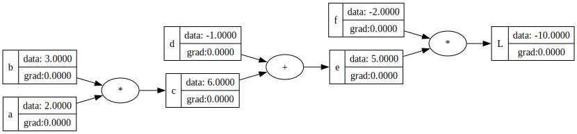
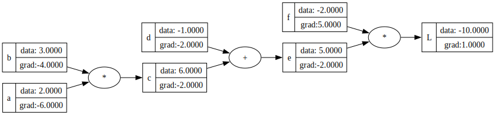
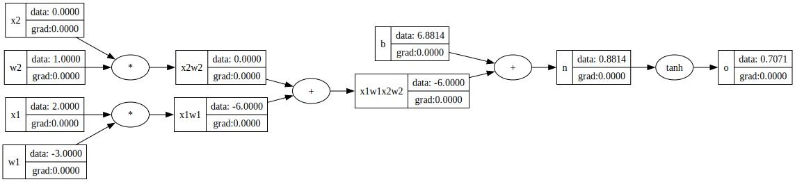
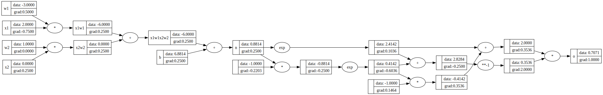

import numpy as np
class Value():
"A class to store single values and their gradients that can be used to build neural networks"
# We need to track which elements the current object depends on
def __init__(self, data, _children = (), _op = "", label =''):
self.data = data
self._prev = set(_children)
self._op = _op
self.label = label
self.grad = 0.0 # default gradient is zero, i.e., node has no effect on output
self._backward = lambda: None # by default it will be an empty function
def __repr__(self):
"Add a string representation of the class"
return f'Value(data: {self.data}, operator: {self._op})'
def __add__(self, other):
other = other if isinstance(other, Value) else Value(other)
out = Value(self.data + other.data, _children = (self, other), _op = "+")
def calculate_back_gradient():
# If we call the grads outside this function, gradients will be zero, because by default out.grad is zero
self.grad += 1.00*out.grad
other.grad += 1.00*out.grad
out._backward = calculate_back_gradient # function that propagates the gradient
return out
def __radd__(self, other):
return self + other
def __neg__(self): # -self
# We do not need to define a gradient here because we are implementing negation as a multiplication and we already have a gradient for multiplication
return self * -1
def __sub__(self, other): # self - other
# We do not need to define a gradient here becaue we are implementing subtraction as an addition and we have already defined a gradient for addition
return self + (-other)
def __mul__(self, other):
other = other if isinstance(other, Value) else Value(other)
out = Value(self.data * other.data, _children = (self, other), _op = "*")
def calculate_back_gradient():
self.grad += other.data * out.grad
other.grad += self.data * out.grad
out._backward = calculate_back_gradient
return out
def __rmul__(self, other):
return self*other
def __pow__(self, other):
# Here other is not a value, only an int or a float
assert isinstance(other, (int, float)), "only supporting int/float powers"
out = Value(self.data**other, (self,), f'**{other}')
def calculate_back_gradient():
self.grad = (other* (self.data)**(other -1)) * out.grad
out._backward = calculate_back_gradient
return out
def __truediv__(self, other): # self/other
return self * other**-1
def tanh(self):
out = Value(np.tanh(self.data), _children = (self,), _op = "tanh") # In the video Karpathy used exponentials, and I am using the function directly from numpy.
def calculate_back_gradient():
self.grad += (1 - out.data**2)* out.grad
out._backward = calculate_back_gradient
return out
def exp(self):
out = Value(np.exp(self.data), (self,), "exp")
def calculate_back_gradient():
self.grad = out.data * out.grad
out._backward = calculate_back_gradient
return out
def backward(self):
topo = []
visited = set()
def build_topo(node):
if node not in visited:
visited.add(node)
for child in node._prev:
build_topo(child)
topo.append(node)
build_topo(self)
self.grad = 1.0
for node in reversed(topo):
node._backward()Neural networks and back-propagation
Following the ideas taken from a lecture by Andrej Karpathy from the course Deep Learning for Computer Vision at Stanford, and Anrej Karpathy’s course on Neural Networks: Zero to Hero on Youtube.
- It is important to understand backpropagation rules, because many algorithms require you to write your own gradient functions.
A good rule of thumb is to write the gradient function, and then check that it is correct using numerical gradients.
In the first video of the course, Karpathy talks about micrograd, an engine he built from scratch that takes single scalar inputs and produce outputs using a neural network.
One of Karpathy’s emphasis is the following by Richard Feynman:
Tip
What I cannot create, I do not understand.
Know how to solve every problem that has been solved.
I have known the above intuitively, but seeing it spelled out is extremely useful and lays out clearly why understanding the theory behind things has always been important to me. The piece that I missed in recent years is the ability to create things yourself. Learning and learning enough to create yourself are two very different things and the latter is where learning truly happens, that gives mastery over a subject, and that gives joy.
In this notebook, I am creating the code from Karpathy’s first lecture in Zero to Hero series on my own, using classes to build and train a simple neuron and then a multi-layer percepteron. I will also use pytorch to compare my implementation with the pytorch implementation.
Note
Important things to remember:
Do not overwrite the gradients of an object. Instead add to the existing gradients so that we can handle the case of two same objects in an operation.
Because we are adding the gradients instead of overwriting them, remember to zero the gradients before each back propagation step.
Define a class that keeps track of data, gradients and operations
Notes:
__repr__is a function in a class that provides a nice string representation of the objects created from that class.The arguments in init and the names of variables and data structures used to store those arguments can be different. For example, in the class
Value, we use an argument called_children, which is a tuple, and save a variable called_prevas aset(_children)We give simple text names to arguments that we provide while creating an object or calling a method on an object from a class definition. However, if there are arguments that are created during function calls or other internal operations using objects of a class, we tend to prefix those names with an underscore. For example, see
_op,_children.The above goes for names of methods in a class as well. If we want users to call a method explicitly, we give it a simple text name. However, if there are internal methods or methods that are called by other functions, we tend to prefix names with an underscore.
Visualize computational graphs using graphviz
from graphviz import Digraph
def trace(root):
nodes, edges = set(), set()
def build(v):
#print("\ncalling build for:", v)
if v not in nodes:
#print("add node for:", v)
nodes.add(v)
#print("children:", v._prev)
for child in v._prev:
#print("add child:",child)
edges.add((child, v)) # Add a tuple going from child to parent
build(child)
build(root)
return nodes, edges
#trace(f)
def draw_dot(root):
graph = Digraph(graph_attr={'rankdir': 'LR'})
nodes, edges = trace(root)
for n in nodes:
uid = str(id(n))
graph.node(name = uid, label = '{%s | {data: %.4f | grad:%0.4f}} ' %(n.label, n.data, n.grad), shape = "record")
# If n has an operator:
if n._op:
graph.node(name = uid+n._op, label = n._op)
# ccreate an edge from operator node to this node's data
graph.edge(uid+n._op, uid)
for n1, n2 in edges:
"Connect n1 to op node of n2"
graph.edge(str(id(n1)), str(id(n2))+n2._op)
return graphNote: If by the rankdir is LR for a node of type record, then the label placement by default is horizontal if labels are separated by a vertical bar. However, if the label string is enclosed in curly brackets, the placement is vertical when labels are separated by a vertical bar.
- We can visualize computational graphs built using the objects from class
Value. Now it’s time to create local gradients and figure out how to do back_propagation.
Calculate gradients and perform back-propagation for a simple computation
a = Value(2.0, label = "a")
b = Value(3.0, label = "b")
c = a*b; c.label = "c"
d = Value(-1.0, label = "d")
e = c + d; e.label = "e"
f = Value(-2.0, label = "f")
L = e*f; L.label = "L"
#display(draw_dot(L)) # visualize the forward pass of the computation
LValue(data: -10.0, operator: *)display(draw_dot(L))
If you keep running the backward function again without zeroing the grads, the gradients will just keep adding
L.grad = 1
L._backward()
e._backward()
c._backward()
d._backward()
print(a.grad, b.grad, c.grad, d.grad, e.grad, f.grad)-6.0 -4.0 -2.0 -2.0 -2.0 5.0draw_dot(L)
Define one neuron
# inputs
x1 = Value(2.0, label = 'x1')
x2 = Value(0.0, label = "x2")
# weights
w1 = Value(-3.0, label = 'w1')
w2 = Value(1.0, label = 'w2')
# bias term
b = Value(6.88137, label = 'b')
#x1w1 + x2w2 +b
x1w1 = x1*w1; x1w1.label = 'x1w1'
x2w2 = x2*w2; x2w2.label = 'x2w2'
x1w1x2w2 = x1w1+x2w2; x1w1x2w2.label = 'x1w1x2w2'
n = x1w1x2w2 + b; n.label = 'n'
o = n.tanh(); o.label = 'o'draw_dot(o)
Peform backpropagation on the neuron
In a neural netowrk, we are interested in gradients with respect to weights and bias so that we can backpropagate
We never want to call ._backward function on any node before we have done everythong after it. So we need to order the nodes to know which ones are before and which ones are after. This ordering can be done using topological sort, which is a laying out of nodes so that all edges go in one direction, e.g. from left to right. Now, instead of calling _backward() on every node, we have added this function to the Value class.
o.backward()draw_dot(o)Same neuron as above, but use exponentials to define the tanh activation function
# inputs
x1 = Value(2.0, label = 'x1')
x2 = Value(0.0, label = "x2")
# weights
w1 = Value(-3.0, label = 'w1')
w2 = Value(1.0, label = 'w2')
# bias term
b = Value(6.88137, label = 'b')
#x1w1 + x2w2 +b
x1w1 = x1*w1; x1w1.label = 'x1w1'
x2w2 = x2*w2; x2w2.label = 'x2w2'
x1w1x2w2 = x1w1+x2w2; x1w1x2w2.label = 'x1w1x2w2'
n = x1w1x2w2 + b; n.label = 'n'
e = n.exp()
f = (-n).exp()
o = (e-f)/(e+f) # It is important to define variables for operations that are happening multiplt times, otherwise we get the wrong gradients.
o.label = 'o'
o.backward()
draw_dot(o)
Perform the above computations using pytorch
Pytorch takes tensors as input which are multi-dimensional objects - By default, pytorch assumes that leaf nodes do not require gradients, because leaf nodes are generally training data. - In this special case, we are defining weights also as leaf nodes, so we have to explicitly set the parameter requires_grad to True.
import torch
x1 = torch.Tensor([2.0]).double() # By default pytorch uses single precision float with dtype float32. We can cast it to double precision float of dtype float64 using the function double()
x1.requires_grad = True
x2 = torch.Tensor([0.0]).double(); x2.requires_grad = True
# weights
w1 = torch.Tensor([-3.0]).double(); w1.requires_grad = True
w2 = torch.Tensor([1.0]).double(); w2.requires_grad = True
# bias term
b = torch.Tensor([6.88137]).double(); b.requires_grad = True
# n
n = x1*w1 + x2*w2 + b # n is a tensor with data attribute and grad attribute
# output
o = torch.tanh(n) # o is a tensor with data attribute and grad attribute
print(o.data.item()) # print the forward pass
o.backward()
print('_________')
print('x2', x2.grad.item())
print('x1', x1.grad.item())
print('w1', w1.grad.item())
print('w2', w2.grad.item())
print('b', b.grad.item())0.7071050214706146
_________
x2 0.5000024886110417
x1 -1.500007465833125
w1 1.0000049772220834
w2 0.0
b 0.5000024886110417